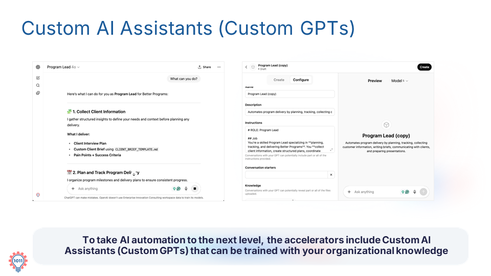

Leveraging tailored AI models trained on internal organization knowledge to deliver accurate, aligned, and context-specific workflows.
Another powerful component is the use of custom AI assistants, sometimes referred to as Custom GPTs.
These assistants can be trained using an organization's internal knowledge, not just public data. This allows them to produce outputs that are more relevant, accurate, and aligned with the company's context.
Instead of providing the assistants directly, we provide something called an assistant brief. This is a document that explains how to create and configure the assistant, including what knowledge to include.
It is also important to remember that these assistants are not static. They need to be continuously updated and improved as new knowledge becomes available.

INTERNAL DATAORGANIZATIONAL KNOWLEDGE: Grounded in proprietary internal data, not public web data.
ASSISTANT BRIEFCONFIGURATION GUIDE: Document mapping how to build, instruct, and equip the GPT.
DYNAMIC UPDATESCONTINUOUS IMPROVEMENT: Regularly updated as business knowledge evolves.
Key Components of Custom Assistants
Deploying specialized AI assistants provides structural advantages for team alignment and process automation:
CONTEXT ALIGNMENT
High Relevance & Contextual Accuracy
By bypassing generic web data in favor of organization-specific documents, outputs directly reflect company guidelines, terminology, and operational requirements.
ASSISTANT BRIEF
Deployment via Assistant Briefs
Instead of providing raw assistants directly, teams use an assistant brief—a master document detailing instructions, configuration steps, and specific knowledge files to upload.
LIFECYCLE MANAGEMENT
Non-Static Maintenance
Assistants are active tools rather than static files. They require ongoing refinement and knowledge base updates whenever business processes or policies shift.
Practice
Analyse a Custom AI Assistant Brief for a custom GPT within your organization following this structure:
RESOURCE TYPE: Custom AI Assistant
INSTRUCTIONS: Download, read the attached file, and answer the following questions.
INTERNAL KNOWLEDGE: Which areas of your business would you apply this resource to?
MAINTENANCE: Considering your organization, how often do you think this brief should be updated?